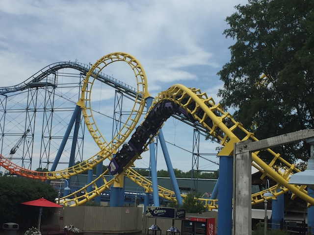

| |
Carolina Cyclone Review

We're here at Carowinds. Today's ride we'll be reviewing for you is Carolina Cyclone. Once you get in the cars and pull down the OTSRs, you're off. You roll down a dip and around a small turn. After this, we then start to climb the lifthill. If we look to our left, we can see all of the Carolina Cyclone, and to the right, the rest of Carowinds. We then head down a pre drop, head around a sort of awkward turnaround, and head down the first drop. The first drop gives us a decent amount of speed for just an Arrow Loopscrew. Well, that's a lot of fun. We immidietly head right into the vertical loops. The first vertical loop we go through is pretty forceful for an Arrow Loopscrew. However, it doesn't kill us. So, we go through a second loop. That ought to do the trick. Nope it just gives us some fun. We then fly up a small hill and into a sort of banked turn. *Sigh* OK, there's a little bit of headbanging right there. And then, we head straight into the corkscrews. The corkscrews are...clunky. Yeah, they're mildly fun. But also mildly rough. So I guess it all balances out. We then head over a small little hill before heading through an upward helix which just takes away all the speed we had from that small drop. And yeah. The final brakes are here, and it's over. While this ride is just an Arrow Loopscrew and nothing special, it's still a fun little ride. I guess I'd recommend it if there's no line and you need the credit. It may have a little bit of a rattle, but it's a fun little ride.
6/10
Location: Carowinds
Opened: 1980
Built by: Arrow
Last Ridden: June 24, 2016
Carolina Cyclone Photos
Home
|